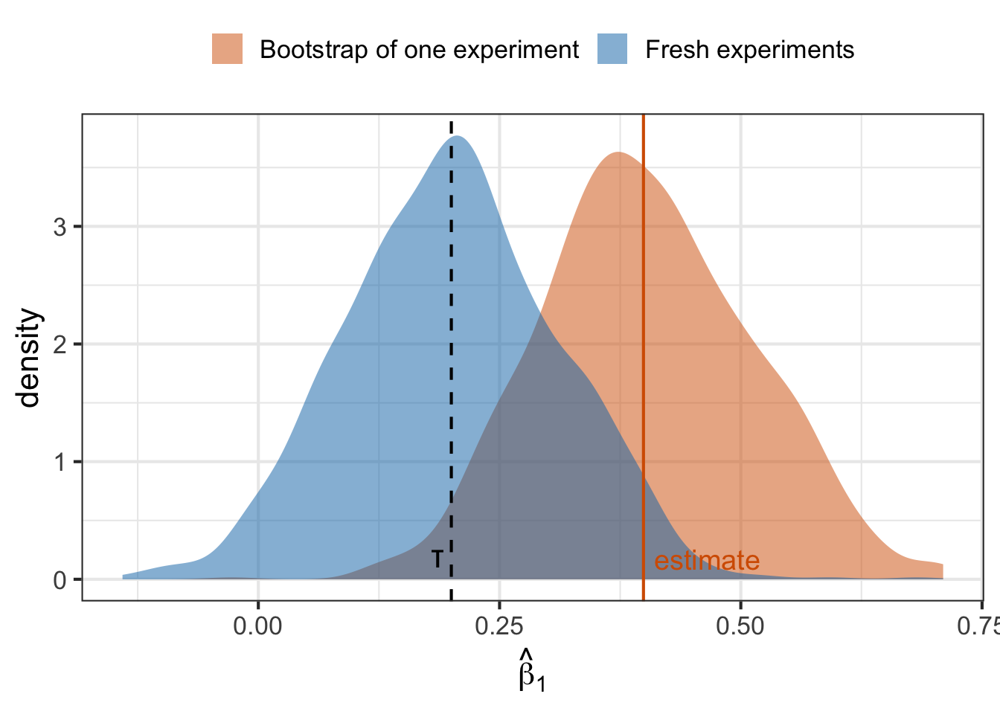
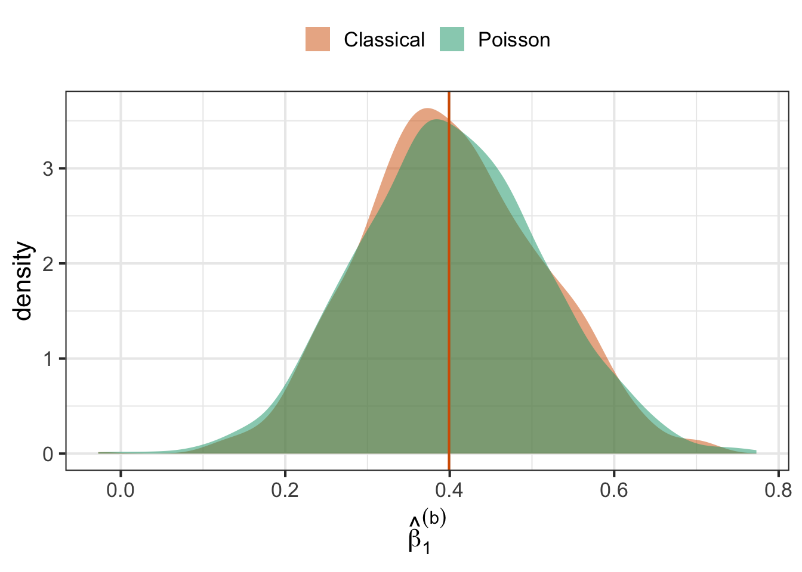
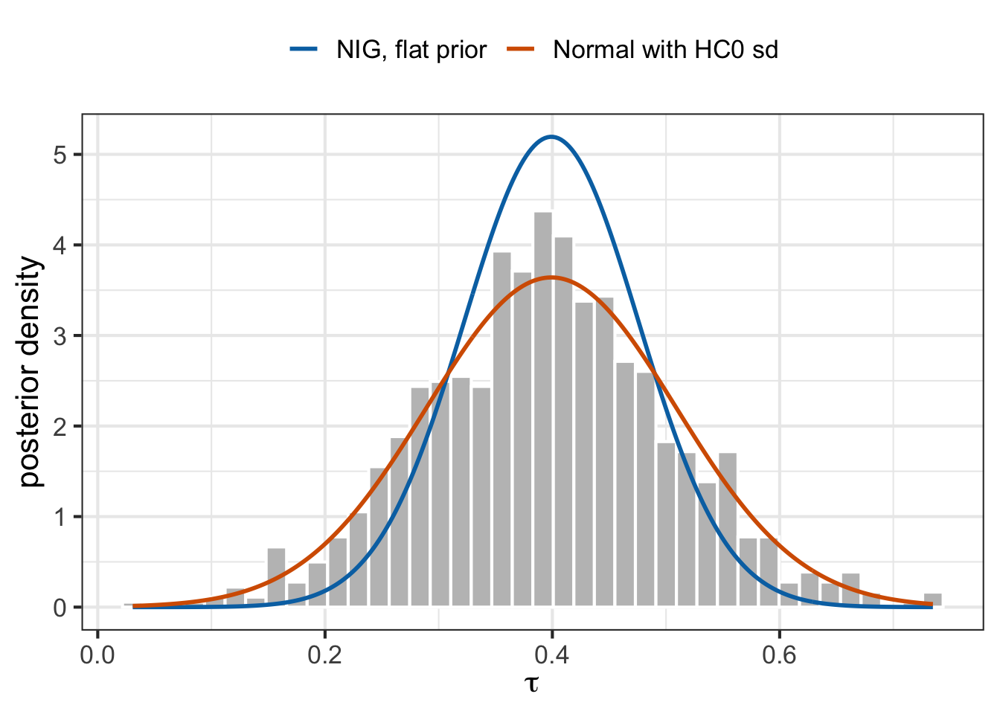

A team runs an AB test and reports a covariate-adjusted effect on hours streamed. A second team reports the difference in median hours. A third wants the probability that the effect is positive. The first has a textbook standard error, if we remember to make it robust. The second has no simple formula at all. The third needs a posterior, which in our previous post on posterior distributions required a prior, a likelihood, and some care when the likelihood was wrong.
The bootstrap answers all three with one recipe: refit the same estimator many times on perturbed versions of the data. In this post we describe three versions of it. The classical bootstrap of Efron (1979) resamples the data. The Poisson bootstrap reweights it, which makes it practical for big datasets. The Bayesian bootstrap of Rubin (1981) also reweights it, and produces a posterior. All three are the same computation with differently distributed weights. What changes is how the weights are drawn, and what the resulting distribution means.
The classical bootstrap: resample the data
The plug-in principle
Let \(F\) be the population distribution that generates a user’s data. Each time \(F\) generates a user, it produces one row of data \((y_i, T_i, X_i)\): user \(i\)’s outcome, treatment indicator and covariates. \(F\) determines how often each kind of row comes up, for example how common light viewers are relative to heavy viewers. This is also what makes \(F\) a probability distribution: for any set of rows, it gives the probability that a generated user’s row falls in that set. Most things we want to estimate are summaries of \(F\): a mean, a median, a treatment effect, a regression coefficient. Call such an estimand \(\theta = \theta(F)\). It is a fixed number, because \(F\) is fixed.
We never see \(F\). We see the \(n\) users it generated. From them we build a stand-in population, the empirical distribution \(\hat F\). It is a population made only of our \(n\) users, in equal shares: to generate a user from \(\hat F\), pick one of our \(n\) users at random, each with probability \(1/n\), and return that user’s row. We write it as
\[\hat F = \sum_{i=1}^n \frac{1}{n}\,F_i,\]
where \(F_i\) is the population made only of copies of user \(i\): every user it generates has user \(i\)’s row \((y_i, T_i, X_i)\). The sum here does not add up numbers. It is a recipe for mixing populations: with probability \(\frac{1}{n}\), generate the user from \(F_i\). A weighted sum of single-user populations is therefore itself a population, and so itself a distribution. The probability it gives to a set of rows is the total weight of the users whose rows are in that set, and averages under it are weighted averages over our users. For example, the mean outcome of \(\hat F\) is \(\sum_i \frac{1}{n} y_i\).
The plug-in estimate replaces \(F\) by \(\hat F\):
\[\hat\theta = \theta(\hat F).\]
The sample mean is the mean of \(\hat F\), the sample median is the median of \(\hat F\), and so on.
\(\hat\theta\) is random, because a different sample of \(n\) users gives a different \(\hat F\). The distribution of \(\hat\theta\) over repeated samples of \(n\) users generated by \(F\) is its sampling distribution, and its standard deviation is the standard error. To see the sampling distribution directly we would need \(F\) to generate new samples, which we cannot ask it to do.
Efron’s idea is to let \(\hat F\) generate the new samples instead. Generating \(n\) users from \(\hat F\) means picking \(n\) of our users uniformly at random, with replacement. The classical bootstrap is
For \(b = 1, \dots, B\), draw \(n\) users from the sample with replacement, and compute the estimate \(\hat\theta^{(b)}\) on this resample.
Use the spread of \(\hat\theta^{(1)}, \dots, \hat\theta^{(B)}\) around \(\hat\theta\) as a stand-in for the spread of \(\hat\theta\) around \(\theta\).
The bootstrap standard error is the standard deviation of the \(\hat\theta^{(b)}\). The 2.5% and 97.5% quantiles of the \(\hat\theta^{(b)}\) give a percentile confidence interval, and \(\frac{1}{B}\sum_b \hat\theta^{(b)} - \hat\theta\) estimates the bias of \(\hat\theta\). None of these steps needs a formula for the variance of \(\hat\theta\), which is what makes the bootstrap useful for medians, ratios, ranks and machine learning models.
Running example: an experiment on hours streamed
Consider an experiment on \(n = 10{,}000\) users. For user \(i\), \(y_i\) is hours streamed during the experiment, \(T_i\) is the treatment indicator, and \(X_i\) is hours streamed in the pre-period. Treatment is randomized with probability 0.2, as in a test with a small treatment arm. We simulate from
where the noise \(\varepsilon_i\) has mean zero and standard deviation \(0.2\, X_i (1 + T_i)\). Heavier viewers are noisier, and treatment doubles the noise. The noise variance is not constant, so the textbook standard error of least squares, which assumes it is, will be wrong.
Code
tau <-0.2simulate_users <-function(n) {tibble(user =seq_len(n),X =rgamma(n, shape =2, scale =5),# Randomized treatment. Note that this masks R's shorthand T for TRUET =rbinom(n, 1, 0.2) ) |>mutate(y =2+ tau * T +0.8* X +rnorm(n, sd =0.2* X * (1+ T)))}set.seed(2026)n <-10000users <-simulate_users(n)head(users)
# A tibble: 6 × 4
user X T y
<int> <dbl> <int> <dbl>
1 1 11.0 0 8.40
2 2 2.35 0 3.05
3 3 0.302 0 2.27
4 4 3.97 0 4.28
5 5 10.9 0 13.0
6 6 15.1 1 18.5
We estimate the coefficients with least squares. Stack the rows \(M_i = (1, T_i, X_i)\) into the \(n \times k\) design matrix \(M = [1, T, X]\), with \(k = 3\), and the outcomes into the \(n\)-vector \(y\). Least squares minimizes \(\sum_i (y_i - M_i\beta)^2\), and the solution is
The second form writes both matrices as sums over users, because \(M^\top M\) adds up the \(k \times k\) outer products \(M_i^\top M_i\) and \(M^\top y\) adds up the \(k\)-vectors \(M_i^\top y_i\).
1 T X
[1,] 1.853100 0.5247530 0.8125417
[2,] 1.977129 0.3472915 0.8000558
[3,] 1.830352 0.4649621 0.8198540
Each row is one replicate \(\hat\beta^{(b)}\). The bootstrap standard error of each coefficient is the standard deviation of its column. We compare it with the textbook standard error, \(\sqrt{\hat\sigma^2 [(M^\top M)^{-1}]_{uu}}\) for coefficient \(u\), with \(\hat\sigma^2 = \frac{1}{n-k}\sum_i \hat\varepsilon_i^2\) and residuals \(\hat\varepsilon_i = y_i - M_i \hat\beta\). We call it the naive standard error, because it assumes every user has the same noise variance.
1 T X
naive 0.05630463 0.07680789 0.004375192
classical 0.07294947 0.10969559 0.008279613
The two disagree on \(\beta_1\): 0.077 for the naive formula against 0.110 for the bootstrap. Which one is right? Because we simulated the data, we can check. We simulate 1,000 fresh experiments from the same population, fit least squares on each, and take the standard deviation of the 1,000 estimates of \(\beta_1\). Those 1,000 estimates are draws from the true sampling distribution, which the bootstrap is trying to imitate from a single experiment.
The true standard error is 0.110. The bootstrap recovers it from one experiment, without being told the noise variance changes across users, while the naive formula understates it by 30%. The bootstrap gets it right because resampling users keeps each user’s noise attached to that user’s \(T_i\) and \(X_i\). In the post on the linear probability model we fixed the same problem with robust standard errors.
The bootstrap distribution is a sampling distribution
Figure 1 overlays the 1,000 bootstrap replicates of \(\hat\beta_1\) from our one experiment on the 1,000 estimates from fresh experiments.
Code
bind_rows(tibble(source ="Bootstrap of one experiment", beta_1 = beta_classical[, "T"]),tibble(source ="Fresh experiments", beta_1 = beta_1_sampling)) |>ggplot(aes(x = beta_1, fill = source)) +geom_density(alpha =0.5, color =NA) +geom_vline(xintercept = tau, linetype ="dashed") +geom_vline(xintercept = beta_hat["T"], color ="#D55E00") +annotate("text", x = tau, y =0, label ="τ", vjust =-0.5, hjust =1.5, size =6) +annotate("text", x = beta_hat["T"], y =0, label ="estimate", vjust =-0.5, hjust =-0.1,size =5, color ="#D55E00") +scale_fill_manual(values =c("#D55E00", "#0072B2")) +labs(x =expression(hat(beta)[1]), y ="density", fill =NULL) +theme_bw(base_size =16) +theme(legend.position ="top")

Figure 1: The bootstrap distribution (one experiment, 1,000 resamples) and the true sampling distribution (1,000 fresh experiments) of the estimate of β₁. Same width, different centers: the bootstrap is centered at the estimate from our experiment, the sampling distribution at the truth τ.
The two curves have the same width but different centers. The fresh experiments scatter around the truth \(\tau\). The bootstrap replicates scatter around our estimate \(\hat\beta_1\), because the bootstrap treats \(\hat F\) as if it were the population. What the bootstrap reproduces is the shape of the error: the distribution of \(\hat\beta_1^{(b)} - \hat\beta_1\) approximates the distribution of \(\hat\beta_1 - \tau\).
Our experiment happens to be an unlucky one. Its estimate is 1.8 standard errors above \(\tau\), and 7% of the fresh experiments land at least that far from \(\tau\) in either direction. From inside the experiment there is no way to tell.
So the bootstrap does create a distribution for the estimator, and that distribution is the sampling distribution. It answers the question “if we reran this experiment on new users, how much would our estimate move?”. The population, and with it \(\tau\), is held fixed while hypothetical datasets vary.
The classical bootstrap is not a posterior
In the posterior distribution post we separated two kinds of distributions. A confidence interval comes from the sampling distribution, where \(\tau\) is a fixed constant and the randomness comes from the data. A posterior distribution \(p(\tau \mid \text{data})\) treats \(\tau\) as uncertain and holds the observed data fixed. Only the posterior supports a statement like “there is a 95% probability that \(\tau\) is between these two numbers”.
The classical bootstrap sits firmly on the first side. Every replicate is a hypothetical dataset, and the histogram in Figure 1 describes how the estimate varies across datasets. The classical bootstrap is not a posterior distribution for \(\tau\), and reading its quantiles as probabilities about \(\tau\) is the same mistake as reading a confidence interval that way.
Resampling is reweighting
A resample of \(n\) users contains some users several times and others not at all. Let \(w_i\) be the number of times user \(i\) appears in a resample. To see this concretely, take the first 6 users and draw a resample of size 6.
# A tibble: 6 × 4
user X T y
<int> <dbl> <int> <dbl>
1 2 2.35 0 3.05
2 2 2.35 0 3.05
3 3 0.302 0 2.27
4 4 3.97 0 4.28
5 4 3.97 0 4.28
6 5 10.9 0 13.0
Code
# The same information as a count for each original userusers_6 |>mutate(w =tabulate(rows, nbins =6))
# A tibble: 6 × 5
user X T y w
<int> <dbl> <int> <dbl> <int>
1 1 11.0 0 8.40 0
2 2 2.35 0 3.05 2
3 3 0.302 0 2.27 1
4 4 3.97 0 4.28 2
5 5 10.9 0 13.0 1
6 6 15.1 1 18.5 0
The resampled dataset and the original 6 users with a count column \(w\) carry exactly the same information. Any estimator that adds up contributions from each row, as least squares adds up \(M_i^\top M_i\) and \(M_i^\top y_i\), gives the same answer on the resample as on the original data with user \(i\) counted \(w_i\) times. A resample is therefore the original data with weights. In the classical bootstrap the weight vector \(w = (w_1, \dots, w_n)\) is the vector of counts from \(n\) draws with replacement, which is a multinomial distribution:
\[
w \sim \text{Multinomial}\left(n; \tfrac{1}{n}, \dots, \tfrac{1}{n}\right).
\]
The rest of the post varies only the distribution of \(w\).
The Poisson bootstrap: reweight, don’t resample
The problem with multinomial weights at scale
Resampling is easy on one machine with 10,000 users. It is awkward on an experimentation platform with hundreds of millions of users whose rows are spread across many machines or arrive as a stream. The multinomial counts are coupled: they must add up to \(n\). To draw them we need to know \(n\) before we start, and we cannot draw user \(i\)’s count without coordinating with every other user’s count. If we resample literally, we also build \(B\) new datasets, or make \(B\) passes over the data.
From multinomial to Poisson weights
Look at one user’s count on its own. Each of the \(n\) draws picks user \(i\) with probability \(1/n\), so the count \(w_i\) is Binomial\((n, 1/n)\):
The limit is the Poisson(1) probability weight. The coupling between users is also weak: the covariance of two multinomial counts is \(\text{Cov}(w_i, w_j) = -n \cdot \frac{1}{n} \cdot \frac{1}{n} = -\frac{1}{n}\), which vanishes as \(n\) grows. The Poisson bootstrap drops the coupling and draws every weight independently,
This idea is due to Hanley and MacGibbon (2006), and Chamandy et al. (2012) describe its use at Google for massive data streams. Now each row draws its own weight in each replicate without knowing \(n\) or anything about other rows. A machine holding a shard of users can draw their weights on the fly, for example by seeding a random number generator with the user id, and never needs to materialize a resampled dataset. The price is that the size of a replicate, \(\sum_i w_i\), is no longer exactly \(n\). It is Poisson\((n)\), which varies by about \(\sqrt{n}\), or 1% of \(n\) for our experiment.
We check the Poisson limit and the replicate sizes on our experiment by drawing one multinomial count vector and comparing the share of users with each count against a matrix of Poisson weights.
# Replicate sizes: sums of each column of Poisson weightssummary(colSums(w_poisson))
Min. 1st Qu. Median Mean 3rd Qu. Max.
9682 9934 10003 10004 10072 10373
The shares match the Poisson(1) probability weights in both columns. About 37% of users get weight zero and drop out of a replicate, and the replicate sizes range from 9,682 to 10,373 around \(n = 10{,}000\). For the 6 users from before, the first three replicates are
The Poisson bootstrap never creates a new dataset. Each replicate is the original data with a new column of weights. So any estimator that accepts weights can run inside the Poisson bootstrap: a weighted mean, weighted least squares, weighted logistic regression, gradient boosted trees with sample weights. A weight of 2 means “this user counts twice” and a weight of 0 means “this user is left out”, which are exactly the operations a resample performs.
Least squares with weights
Earlier we computed \(\hat\beta = (M^\top M)^{-1}M^\top y\). Weighted least squares minimizes \(\sum_i w_i (y_i - M_i\beta)^2\), where user \(i\)’s squared error counts \(w_i\) times. Setting the gradient to zero gives the normal equations \(\sum_i w_i M_i^\top (y_i - M_i \beta) = 0\), and solving them gives replicate \(b\)’s estimate
where \(w^{(b)}\) is the weight vector of replicate \(b\). Compared with the sums for \(\hat\beta\), each user’s contribution is multiplied by \(w_i^{(b)}\), which is what counting a user \(w_i^{(b)}\) times does. With all weights equal to 1 we get \(\hat\beta\) back.
Computing all replicates in one pass
The direct implementation calls a weighted regression \(B\) times, rereading \(M\) and \(y\) every time. But \(M\) and \(y\) never change across replicates; only \(w\) does. We can exploit that.
Entry \((u, v)\) of the \(k \times k\) matrix \(M^\top \text{diag}(w)\, M\) is
where \(M_{iu}\) is entry \(u\) of user \(i\)’s row. This is a dot product between the weight vector and the elementwise product of columns \(u\) and \(v\) of \(M\). If we place the \(B\) weight vectors side by side as the columns of an \(n \times B\) matrix \([w^{(1)}, \dots, w^{(B)}]\), a single product of that matrix with the column \((M_{1u}M_{1v}, \dots, M_{nu}M_{nv})\) gives entry \((u, v)\) for all \(B\) replicates at once. The matrix is symmetric, so there are only \(k(k+1)/2 = 6\) distinct entries to compute. In the same way, entry \(u\) of \(M^\top \text{diag}(w)\, y\) is \(\sum_i w_i M_{iu} y_i\), which is a product of the weight matrix with the column \((M_{1u}y_1, \dots, M_{nu}y_n)\).
So the whole bootstrap takes three steps.
Build the \(n \times 6\) matrix of column products of \(M\), and the \(n \times 3\) matrix whose row \(i\) is \(M_i y_i\).
Multiply each by the \(n \times B\) weight matrix. This gives a \(6 \times B\) and a \(3 \times B\) matrix, and it is the only step that touches all \(n\) users, in one pass.
For each replicate, unpack its 6 entries into a \(3 \times 3\) matrix and solve the \(3 \times 3\) system.
The product matrices only contain sums over users, so in a distributed system each machine computes them for its own users and the results add up. These are the same kind of sufficient statistics we used to compress experiment data, with one set per bootstrap replicate, all computed in the same pass.
Code
fit_weighted_ols <-function(M, y, w) { k <-ncol(M) pairs <-expand_grid(u =seq_len(k), v =seq_len(k)) |>filter(u <= v)# Step 1: n x k(k+1)/2 column products, and n x k rows M_i y_i M_pairs <-do.call(cbind, map2(pairs$u, pairs$v, \(u, v) M[, u] * M[, v]))colnames(M_pairs) <-paste(colnames(M)[pairs$u], colnames(M)[pairs$v], sep ="·") My <- M * y# Step 2: one pass over the n users for all B replicates MtwM <-crossprod(M_pairs, w) Mtwy <-crossprod(My, w)# Step 3: B small k x k solves beta <-do.call(rbind, map(seq_len(ncol(w)), \(b) { MtwM_b <-matrix(0, k, k) MtwM_b[cbind(pairs$u, pairs$v)] <- MtwM[, b] MtwM_b[cbind(pairs$v, pairs$u)] <- MtwM[, b]solve(MtwM_b, Mtwy[, b]) }))colnames(beta) <-colnames(M)list(M_pairs = M_pairs, MtwM = MtwM, Mtwy = Mtwy, beta = beta)}time_poisson <-system.time({ fit_poisson <-fit_weighted_ols(M, y, w_poisson)})["elapsed"]
Here are the column products for our 6 users, followed by the 6 distinct entries of \(M^\top\text{diag}(w)\,M\) for the first three replicates.
Each column of products has a physical meaning. The column \(1 \cdot 1\) is always 1, so its weighted sum is the size of the replicate, 9836 users in replicate 1. The column \(T \cdot T\) equals \(T\), because \(T\) is 0 or 1, so its weighted sum is the number of treated users in the replicate. The column \(1 \cdot X\) adds up pre-period hours. As a check, we solve replicate 1 with R’s weighted lm.
Code
fit_lm_1 <-lm(y ~ T + X, data = users, weights = w_poisson[, 1])rbind(engine = fit_poisson$beta[1, ], lm =coef(fit_lm_1))
1 T X
engine 1.752896 0.4970831 0.8275943
lm 1.752896 0.4970831 0.8275943
The two agree. The one-pass computation of all 1000 replicates took 0.18 seconds, against 0.52 seconds for the literal resampling loop of the classical bootstrap. At 10,000 users on one machine both are fast. The difference that matters at scale is that the one-pass version reads the data once and never builds a resampled dataset.
The Poisson bootstrap distribution and standard errors
Code
beta_poisson <- fit_poisson$betabind_rows(tibble(method ="Classical", beta_1 = beta_classical[, "T"]),tibble(method ="Poisson", beta_1 = beta_poisson[, "T"])) |>ggplot(aes(x = beta_1, fill = method)) +geom_density(alpha =0.5, color =NA) +geom_vline(xintercept = beta_hat["T"], color ="#D55E00") +scale_fill_manual(values =c("#D55E00", "#009E73")) +labs(x =expression(hat(beta)[1]^{(b)}), y ="density", fill =NULL) +theme_bw(base_size =16) +theme(legend.position ="top")

Figure 2: Bootstrap distributions of the estimate of β₁ from the classical (multinomial) and Poisson bootstraps of the same experiment.
Figure 2 shows that the two bootstraps produce nearly the same distribution. Their standard errors are
1 T X
naive 0.05630463 0.07680789 0.004375192
classical 0.07294947 0.10969559 0.008279613
poisson 0.07723449 0.11318564 0.008820526
The Poisson bootstrap standard error of \(\beta_1\) is 0.113, against 0.110 for the classical bootstrap and the true 0.110. With \(B = 1{,}000\) replicates, a bootstrap standard error has Monte Carlo noise of about \(1/\sqrt{2(B-1)} \approx 2\%\), so these are equal within noise.
Why both bootstraps land on the robust standard error
Both bootstraps agree with each other and with the truth, and both disagree with the naive formula. We can see why from the algebra of a single replicate. Write \(y = M\hat\beta + \hat\varepsilon\) and substitute into the weighted least squares formula:
This identity is exact. The full-sample normal equations say \(\sum_i M_i^\top \hat\varepsilon_i = 0\), so we can subtract that zero from the sum and write it as \(\sum_i (w_i - 1)\, M_i^\top \hat\varepsilon_i\). That sum has mean zero, because \(E[w_i] = 1\), and its size grows like \(\sqrt{n}\). The matrix \(M^\top \text{diag}(w)\, M = M^\top M + \sum_i (w_i - 1) M_i^\top M_i\) is \(M^\top M\), which grows like \(n\), plus a mean-zero perturbation that grows like \(\sqrt{n}\). Replacing it by \(M^\top M\) changes \(\hat\beta^{(b)} - \hat\beta\), which is of order \(1/\sqrt{n}\), by an amount of order \(1/n\). This gives the linearized replicate
For multinomial weights the counts are coupled, with \(\text{Var}(w_i) = 1 - \frac{1}{n}\) and \(\text{Cov}(w_i, w_j) = -\frac{1}{n}\). Writing \(s_i = M_i^\top \hat\varepsilon_i\) for user \(i\)’s contribution to the normal equations,
where the second line adds and subtracts \(\frac{1}{n}\sum_i s_i s_i^\top\) to complete the outer product of the sums, and the last line uses the normal equations again, \(\sum_i s_i = 0\). The coupling between counts cancels exactly, and the classical bootstrap lands on the same sandwich. Lancaster (2006) gives the formal statement: the bootstrap covariance of least squares matches the Eicker–White covariance to order \(1/n\).
The intuition is that the naive formula assumes one noise variance for everyone, while the sandwich weights each user’s residual by that user’s own \(M_i\). The bootstrap never assumes a common variance. It perturbs how much each user counts, and each user carries their own residual along. The linearized replicate is also the cheapest computation of all: a single product of the \(n \times k\) matrix with rows \(M_i \hat\varepsilon_i\) and the weight matrix, with no solves.
1 T X
naive 0.05630463 0.07680789 0.004375192
HC0 0.07594796 0.10957207 0.008628506
HC0 (estimatr) 0.07594796 0.10957207 0.008628506
classical 0.07294947 0.10969559 0.008279613
poisson 0.07723449 0.11318564 0.008820526
linearized 0.07735109 0.11310415 0.008828739
fresh experiments NA 0.10953006 NA
Our HC0 matches estimatr. Every bootstrap row sits within Monte Carlo noise of HC0 and of the true standard error of \(\beta_1\), and the naive row is the outlier. For least squares, then, the Poisson bootstrap is a scalable way to get a robust standard error. Its real value is for estimators that have no sandwich formula, where the same weights plug into any weighted fit.
The Bayesian bootstrap: a posterior over the population
The problem: a posterior without a likelihood for the model
The classical and Poisson bootstraps give sampling distributions. In the posterior distribution post we wanted a posterior for \(\tau\), and to get one with covariates we wrote a Normal-Inverse-Gamma model: a Gaussian likelihood for \(y\), a conjugate prior for the coefficients, and, for a 0/1 outcome, a quasi-Bayesian patch that replaced the posterior covariance with a sandwich because the Gaussian likelihood was known to be wrong. Every new estimand would need a new likelihood and prior. Can we get a posterior for an arbitrary estimand without writing either one?
The Bayesian bootstrap says yes. Its trick is to put the prior and the likelihood on the population \(F\) rather than on the parameter.
Deriving the Bayesian bootstrap
We need three assumptions.
(A1) \(F\) generates users independently. This is the same assumption the classical bootstrap makes.
(A2) The population only contains the kinds of users we observed. Recall that \(F_i\) is the population made only of copies of user \(i\), and that the empirical distribution \(\hat F = \sum_i \frac{1}{n}F_i\) mixes our \(n\) users in equal shares. (A2) keeps that form but makes the shares unknown:
\(F\) is still a population that generates users, and so still a distribution. The sum is the same recipe as before: with probability \(\pi_i\), generate the user from \(F_i\), so the generated user has user \(i\)’s row. \(\pi_i\) is the share of the population that looks like user \(i\), and the probability weights \(\pi = (\pi_1, \dots, \pi_n)\) describe the population completely. The empirical distribution is the special case \(\pi_i = 1/n\). The unknown is no longer \(\theta\); it is \(\pi\).
Under (A1) and (A2), a generated user has user \(i\)’s row with probability \(\pi_i\), and users are generated independently, so the probability of our sample is the product of the probabilities of the observed rows. Each observed row appears once, so the likelihood is
(A3) The prior on \(\pi\) is a Dirichlet distribution with zero pseudo-counts. A prior on the shares \(\pi\) is a distribution over populations. To explain this choice we first describe the Dirichlet distribution, then show why it is the natural family for \(\pi\), and then how to set its parameters.
The Dirichlet distribution
The Dirichlet distribution is a distribution over probability weight vectors: every draw is a vector \(\pi\) with \(\pi_i \geq 0\) and \(\sum_i \pi_i = 1\). Because \(F = \sum_i \pi_i F_i\), every draw is also a population. Its parameters are positive numbers \(c_1, \dots, c_n\), and its probability density is
where the omitted constant makes the density integrate to 1 over all probability weight vectors. The parameters are best read as pseudo-counts: the distribution behaves as if we had already seen user \(i\)’s kind of row \(c_i\) times. Two standard properties make that reading concrete.
The mean share is the pseudo-count’s share of the total, \(E[\pi_i] = c_i / \sum_j c_j\).
When every pseudo-count equals the same \(c\), the mean share is \(\frac{1}{n}\) and \(\text{Var}(\pi_i) = \frac{n-1}{n^2(nc + 1)}\). The total pseudo-count \(nc\) sits in the denominator, so more pseudo-counts concentrate the draws around equal shares, as more data would.
With \(n = 2\) the Dirichlet distribution is the Beta distribution, which the posterior distribution post used for Beta-Binomial conjugacy. To draw from a Dirichlet, draw independent \(w_i \sim \text{Gamma}(c_i, 1)\) and normalize, \(\pi_i = w_i / \sum_j w_j\). On our first three users, here are four draws of \(\pi\) for each of three values of a common pseudo-count \(c\), together with the mean outcome \(\sum_i \pi_i y_i\) of each drawn population.
With \(c = 10\), as if we had already seen each kind of user 10 times, the draws stay close to equal shares of \(\frac{1}{3}\) and the population means stay close to the sample mean of the three outcomes. With \(c = 1\) the draws spread evenly over all possible shares. With \(c = 0.1\) the draws pile into the corners: most draws are populations made almost entirely of one kind of user.
Why the Dirichlet is the natural family: conjugacy
Our likelihood is \(\prod_i \pi_i\), because each observed row appears once. A row observed twice would contribute \(\pi_i^2\), so in general each row contributes \(\pi_i\) raised to the number of times it was observed. That is the same algebraic form as the Dirichlet density, so multiplying a Dirichlet prior by our likelihood gives
which is again a Dirichlet density, with parameters \(c_i + 1\). Updating the prior adds each observed row to its pseudo-count. The posterior stays in the same family and in closed form, which is the same reason we chose the conjugate Normal-Inverse-Gamma prior for the Bayesian linear model.
Choosing the pseudo-counts
Two choices remain.
Equal pseudo-counts, \(c_i = c\). Under (A1) users are interchangeable before we see their data, so the prior should not favor any one of them.
How many pseudo-counts. The prior with pseudo-count \(c\) adds \(nc\) pseudo-observations to our \(n\) real ones. The posterior is Dirichlet\((1 + c, \dots, 1 + c)\), and by property 2 its shares have variance \(\frac{n-1}{n^2(n(1+c) + 1)}\). Compared with \(\frac{n-1}{n^2(n + 1)}\) at \(c = 0\), the total count in the denominator grows from \(n\) to \(n(1 + c)\): the posterior is as concentrated as if we had \(n(1 + c)\) observations instead of \(n\). Any \(c > 0\) therefore makes the posterior more certain than the data justify. With \(c = 1\) the prior is as strong as the data. The only choice that adds nothing beyond the data is \(c \to 0\).
The limit \(c \to 0\) gives the prior
\[
p(\pi) \propto \prod_{i=1}^n \pi_i^{-1}.
\]
It is improper, because it does not integrate to a finite number, but the posterior is proper:
The posterior is constant over all probability weight vectors \(\pi\). That is the Dirichlet\((1, \dots, 1)\) distribution. Its mean share is \(E[\pi_i \mid \text{data}] = \frac{1}{n}\), so on average the posterior population is the empirical distribution \(\hat F\), the same stand-in population the classical bootstrap generates from. The spread around \(\hat F\) comes only from the data.
Two cautions about the word “non-informative”.
Zero pseudo-counts is not the same as a flat prior. The flat prior, constant density over all \(\pi\), is \(c = 1\); it would give a Dirichlet\((2, \dots, 2)\) posterior, which is too narrow. In the Bayesian bootstrap the posterior is flat, not the prior.
The prior \(\prod_i \pi_i^{-1}\) is the limit of the \(c = 0.1\) rows of the Dirichlet table: it puts nearly all its weight on populations made of a single kind of user. That is a strange belief to hold before seeing data. Rubin (1981) raised this concern himself. It is harmless here because the data’s one count per row overwhelms zero pseudo-counts.
(A2) and (A3) can also be derived together. A Dirichlet process prior (Ferguson, 1973) puts a prior on all populations, not only those built from our users. It is specified by a guess for the population and a concentration, the number of pseudo-observations that guess is worth. Its posterior mixes the guess with our \(n\) observed users. As the concentration goes to 0 the guess drops out, the posterior contains only the kinds of users we observed, and their shares are Dirichlet\((1, \dots, 1)\): Gasparini (1995) showed this limit is exactly the Bayesian bootstrap.
Sampling the posterior
Setting every \(c_i = 1\) in the Gamma recipe gives Gamma\((1, 1)\), which is the Exponential(1) distribution. So a draw from the posterior is
The \(w_i\) are weights but not probability weights, because they do not add up to 1; the \(\pi_i\) are probability weights. A draw of \(\pi\) is a draw of a plausible population \(F\).
A tiny example: three users
The \(c = 1\) rows of the Dirichlet table are already posterior draws. To see what a posterior draw means as a population, we draw five more for our first three users, with the Exponential recipe. The mean outcome of a population \(F = \sum_i \pi_i F_i\) is the weighted average \(\sum_i \pi_i y_i\), as with \(\hat F\) but with weights \(\pi_i\) in place of \(\frac{1}{n}\).
Code
set.seed(5)pi_draws <-map(1:5, \(d) { w <-rexp(3) w /sum(w)})map(1:5, \(d) { pi <- pi_draws[[d]]tibble(draw = d, pi_1 = pi[1], pi_2 = pi[2], pi_3 = pi[3], mean_y =sum(pi * y_3))}) |>list_rbind()
Each row is a different population built from the same three users. In one draw user 1 represents most of the population, in another user 3 does. The mean of each population is a weighted average of the three observed outcomes, so it always lies between the smallest and largest observed \(y\). Across draws the means form the posterior of the population mean.
Each draw is a population that generates users. Here are 1,000 users generated by the population of draw 1: the first six, and then the share of the 1,000 that copies each of our three users.
# A tibble: 3 × 4
user generated share pi
<int> <int> <dbl> <dbl>
1 1 799 0.799 0.818
2 2 170 0.17 0.152
3 3 31 0.031 0.0298
Every generated user is a copy of one of our three users, because \(F\) contains only the kinds of users we observed. The share of copies of each user is close to \(\pi_i\), which is what it means for \(\pi_i\) to be that user’s share of the population.
From a posterior over the population to a posterior over any estimand
Once we have posterior draws of \(F\), every estimand \(\theta(F)\) gets a posterior for free: compute \(\theta\) on each draw. Nothing about \(\theta\) entered the prior or the likelihood, so \(\theta\) can be anything that is defined for a discrete population.
The mean of \(y\) under \(F\) is \(\sum_i \pi_i y_i\).
The least squares coefficient under \(F\) is the best linear fit in the population, \(\beta(F) = \arg\min_\beta E_F[(y_i - M_i\beta)^2]\), where the expectation is over a user \(i\) generated by \(F\). For \(F = \sum_i \pi_i F_i\), the expectation is the weighted average of the squared errors of our users, \(\sum_i \pi_i (y_i - M_i\beta)^2\), which is weighted least squares with weights \(\pi_i\):
Multiplying every \(\pi_i\) by the same constant \(\sum_j w_j\) cancels between the inverse and the second sum, so we can use the unnormalized \(w_i\) directly. The Bayesian bootstrap of least squares is the weighted fit from the Poisson bootstrap section with Exponential(1) weights in place of Poisson(1) weights. - The median of \(y\) among treated users under \(F\) is the smallest observed \(y_i\) among treated users at which the cumulative weight \(\sum \pi_i\) over treated users, ordered by \(y\), reaches half of their total weight.
This answers the surprise of getting a posterior for an arbitrary model with no prior and no likelihood for that model. There is a prior and a likelihood, on \(\pi\). The “model”, least squares in our case, is not used as a likelihood at all. It is only a definition of which summary of the population we care about. \(\beta(F)\) is the coefficient of the best linear fit in the population whether or not the population is linear or Gaussian, just as a mean is defined whether or not the population is normal. This is the pseudo-true parameter \(\theta^*\) from the quasi-Bayesian section of the posterior distribution post, the minimizer of the expected squared error under the true population, which we reached there by arguing that a wrong Gaussian likelihood still targets it. The Bayesian bootstrap puts a posterior on it directly.
Sanity check: the posterior of a mean
For the population mean we can compute the posterior variance exactly. By property 2 with \(c = 1\), a Dirichlet\((1, \dots, 1)\) draw has \(\text{Var}(\pi_i) = \frac{n-1}{n^2(n+1)}\). The shares add up to 1, so \(\text{Var}(\sum_i \pi_i) = n\,\text{Var}(\pi_i) + n(n-1)\,\text{Cov}(\pi_i, \pi_j) = 0\), which gives \(\text{Cov}(\pi_i, \pi_j) = -\frac{1}{n^2(n+1)}\). Expanding the variance of a weighted sum,
where the second line substitutes the Dirichlet variance and covariance, and the third line adds and subtracts \(\sum_i y_i^2\) to complete \(\big(\sum_i y_i\big)^2\). Repeating the same steps for the Dirichlet\((1 + c, \dots, 1 + c)\) posterior of a prior with pseudo-count \(c\) gives \(\frac{\sum_i (y_i - \bar y)^2}{n(n(1+c) + 1)}\), so the flat prior \(c = 1\) would cut the posterior variance of the mean almost in half, as we argued when choosing the pseudo-counts. The squared standard error of a sample mean is \(\frac{\sum_i (y_i - \bar y)^2}{n(n-1)}\). The two differ by the factor \(\frac{n-1}{n+1}\), which is 0.9998 for our experiment. On our 10,000 users, with the same number of draws as before,
Code
set.seed(6)w_bayes <-matrix(rexp(n * B), nrow = n, ncol = B)mean_y_bayes <-colSums(w_bayes * y) /colSums(w_bayes)c(`posterior sd (draws)`=sd(mean_y_bayes),`posterior sd (exact)`=sqrt(sum((y -mean(y))^2) / (n * (n +1))),`posterior sd, flat prior c = 1 (exact)`=sqrt(sum((y -mean(y))^2) / (n * (2* n +1))),`standard error of the mean`=sd(y) /sqrt(n))
posterior sd (draws) posterior sd (exact)
0.06410441 0.06557242
posterior sd, flat prior c = 1 (exact) standard error of the mean
0.04636786 0.06557898
The draws agree with the exact posterior standard deviation within the Monte Carlo noise of about 2% that \(B = 1{,}000\) draws carry, and the exact posterior standard deviation matches the standard error of the mean to three significant digits. The flat prior would report a posterior standard deviation about \(1/\sqrt{2}\) times as large.
How the Bayesian bootstrap differs from the classical bootstrap
Mechanically, the two bootstraps differ only in the weights. Classical weights are integer counts, and about 37% of users get a count of zero in each replicate. Bayesian bootstrap weights are continuous and strictly positive: every user stays in every draw, with more or less influence. All three kinds of weights have mean 1 and nearly unit variance: \(n\pi_i\) has variance \(\frac{n-1}{n+1}\), the multinomial count has \(1 - \frac{1}{n}\), and the Poisson weight has exactly 1. These shared first two moments are why their histograms nearly coincide, and the argument we made for the sandwich goes through, to first order, for \(n\pi_i\) as well. Lancaster shows the classical and Bayesian bootstrap covariances agree to order \(1/n\).
The meaning is different. The classical bootstrap holds the population fixed at \(\hat F\) and varies hypothetical datasets, so it gives a sampling distribution. The Bayesian bootstrap holds the data fixed and varies the population \(F\) according to its posterior, so it gives \(p(\theta(F) \mid \text{data})\). The numbers come out nearly the same, but only the second justifies probability statements about \(\theta\), and only because we wrote down (A1)–(A3). The difference between the two is the probability model, not the arithmetic.
A posterior for the treatment effect
In a randomized experiment, the coefficient on \(T\) in the population’s best linear fit is the treatment effect, \(\beta_1(F) = \tau\), even when the outcome is not linear in \(X\) and the effect varies across users; the covariate only reduces the variance, as in CUPED. So the posterior distribution of \(\beta_1\), derived from weighted least squares with Exponential weights, is the posterior distribution of the treatment effect. We compute it with the same one-pass function as the Poisson bootstrap, feeding it the Exponential weights we just drew.
For comparison we also compute the posterior of the Normal-Inverse-Gamma model with a flat prior. Letting the prior become flat in that post’s posterior formulas, the marginal posterior of the coefficients is a \(t\) distribution with \(n\) degrees of freedom, centered at \(\hat\beta\), with scale matrix \(\frac{1}{n}\sum_i \hat\varepsilon_i^2\,(M^\top M)^{-1}\). A \(t\) distribution with \(n\) degrees of freedom has variance \(\frac{n}{n-2}\) times its squared scale, so the posterior standard deviations are \(\sqrt{\frac{\sum_i \hat\varepsilon_i^2}{n - 2}\,[(M^\top M)^{-1}]_{uu}}\), nearly the naive standard error.
The Bayesian bootstrap posterior of \(\tau\) has mean 0.395 and standard deviation 0.109, and 1000 of its 1000 draws are positive, so the posterior probability of a positive effect is essentially 1. Its standard deviation matches HC0, while the flat-prior Normal-Inverse-Gamma posterior is 30% narrower, because its Gaussian likelihood assumes every user has the same noise variance. Figure 3 shows the difference.
Code
tau_grid <-seq(min(tau_bayes), max(tau_bayes), length.out =300)tibble(tau = tau_bayes) |>ggplot(aes(x = tau)) +geom_histogram(aes(y =after_stat(density)), bins =40, fill ="grey75", color ="white") +geom_line(data =bind_rows(tibble(curve ="NIG, flat prior", tau = tau_grid,density =dnorm(tau_grid, beta_hat["T"], sd_NIG["T"])),tibble(curve ="Normal with HC0 sd", tau = tau_grid,density =dnorm(tau_grid, beta_hat["T"], se_HC0["T"])) ),aes(y = density, color = curve),linewidth =1 ) +scale_color_manual(values =c("#0072B2", "#D55E00")) +labs(x =expression(tau), y ="posterior density", color =NULL) +theme_bw(base_size =16) +theme(legend.position ="top")

Figure 3: Posterior of τ from the Bayesian bootstrap (histogram), against the normal approximation of the flat-prior Normal-Inverse-Gamma posterior and a normal centered at the estimate with the HC0 standard error.
In the earlier post, getting a robust posterior took a quasi-Bayesian argument and a hand-built sandwich. The Bayesian bootstrap produces it from the weighted least squares fit alone.
A posterior for an estimand with no likelihood: the difference in medians
Least squares at least has a familiar Gaussian likelihood next to it. The difference in medians does not: the median of hours streamed among treated users minus the median among control users, which is a different estimand from \(\tau\). Under a population \(F = \sum_i \pi_i F_i\), the median among treated users is the weighted median of the treated users’ outcomes, with weights \(\pi_i\). Since a weighted median does not change when every weight is multiplied by the same constant, we can again use the \(w_i\) directly. We reuse the same Exponential weights, so each draw of the population gives one draw of each estimand.
Code
weighted_median <-function(y, w) { ord <-order(y) cum_w <-apply(w[ord, , drop =FALSE], 2, cumsum)# Count the users whose cumulative weight is below half the total; the median is the next one below_half <-sweep(cum_w, 2, cum_w[nrow(cum_w), ] /2, `<`) y[ord][colSums(below_half) +1]}treated <- users$T ==1median_diff_bayes <-weighted_median(y[treated], w_bayes[treated, ]) -weighted_median(y[!treated], w_bayes[!treated, ])median_diff_hat <-median(y[treated]) -median(y[!treated])# The true difference in medians, from a very large draw of the same populationset.seed(7)population <-simulate_users(1e6)median_diff_true <-median(population$y[population$T ==1]) -median(population$y[population$T ==0])# The same population with the mean effect removed: only the wider noise remainsy_no_effect <- population$y - tau * population$Tmedian_diff_no_effect <-median(y_no_effect[population$T ==1]) -median(y_no_effect[population$T ==0])rm(population, y_no_effect)tibble(`sample estimate`= median_diff_hat,`posterior mean`=mean(median_diff_bayes),`posterior sd`=sd(median_diff_bayes),`2.5%`=quantile(median_diff_bayes, 0.025),`97.5%`=quantile(median_diff_bayes, 0.975),truth = median_diff_true,`truth without the mean effect`= median_diff_no_effect) |>pivot_longer(everything(), names_to ="quantity", values_to ="difference in medians")
# A tibble: 7 × 2
quantity `difference in medians`
<chr> <dbl>
1 sample estimate -0.335
2 posterior mean -0.378
3 posterior sd 0.172
4 2.5% -0.707
5 97.5% -0.0441
6 truth -0.315
7 truth without the mean effect -0.515
The posterior of the difference in medians has mean -0.378 and a 95% credible interval from -0.707 to -0.044. The true difference is -0.315, which the interval covers.
The difference in medians is negative although treatment raises mean hours by \(\tau = 0.2\). The last row explains why: removing the mean effect from the same population leaves a difference in medians of -0.515, which comes entirely from treatment doubling the noise. A change in the noise leaves the mean alone but can move the median, and here it moves it down by more than the mean effect moves it up.
A team that reports median hours would conclude that treatment hurts, while a team that reports mean hours would conclude it helps. Neither is wrong; they are asking about different summaries of the population. We never wrote a likelihood for medians. The posterior came from the same draws of \(\pi\) as the posterior of \(\tau\).
Assumptions, and when the Bayesian bootstrap breaks
The posterior is only as good as (A1)–(A3), and each has a practical consequence.
(A1), independent users. The unit that receives a weight must be the unit of independence. If an experiment randomizes accounts and we analyze profiles, the weights must be drawn per account and shared by its profiles, exactly as with a cluster-robust standard error.
(A2), support on the observed values. Every posterior draw is a reweighting of the users we saw. A population can never contain a user more extreme than our most extreme user. With heavy tails, such as a few “whales” who stream far more than everyone else, or with small samples, the posterior is too narrow, because it cannot imagine the whale we have not yet seen. The classical bootstrap has the same weakness.
(A3), the prior. The prior is a specific improper prior on \(\pi\), not a statement about \(\tau\). It cannot encode what we already know, for example that most effects in past experiments were small. The Normal-Inverse-Gamma model can, with a prior mean and variance on the coefficients that shrink a noisy estimate. With the Bayesian bootstrap, informative priors and shrinkage across experiments are not available.
The estimand is a population summary.\(\beta_1(F) = \tau\) is the effect in the population that generated the users, not the effect on the specific \(n\) users in the experiment. The prior also does not know that \(T\) was randomized, so some draws of \(F\) have a small chance correlation between \(T\) and \(X\); least squares adjusts for it in each draw.
So can we skip the Bayesian linear model?
For the most common case, yes. If we want a posterior for the average treatment effect, adjusted for covariates, with a variance that does not assume a common noise level, the Bayesian bootstrap of least squares delivers it. It is the same weighted fit as the Poisson bootstrap and runs in the same single pass over the data, even with data spread across machines, because Exponential weights, like Poisson weights, are drawn independently per user. The same posterior draws also give posteriors for estimands that have no convenient likelihood, such as the difference in medians.
We still need the Bayesian linear model when we want an informative prior, for example to shrink effects toward what past experiments have shown, or when the sample is small or heavy-tailed enough that (A2) bites.
Exponential(1), normalized to Dirichlet\((1, \dots, 1)\)
Yes
The posterior of \(\theta(F)\)
What we believe about the estimand, given the data
All three bootstraps refit the same weighted estimator; they differ in how the weights are drawn and in what the resulting distribution means. For least squares in an AB test, all three give the robust sandwich variance rather than the naive one. The classical and Poisson bootstraps give a confidence interval. The Bayesian bootstrap, with its assumptions written down, gives a posterior for \(\tau\) without a likelihood for \(y\). For a team at scale, the practical recipe is one pass over the data with independently drawn weights per user: Poisson weights for a standard error, Exponential weights for a posterior.
The examples in this post are simulations for education, not production systems.